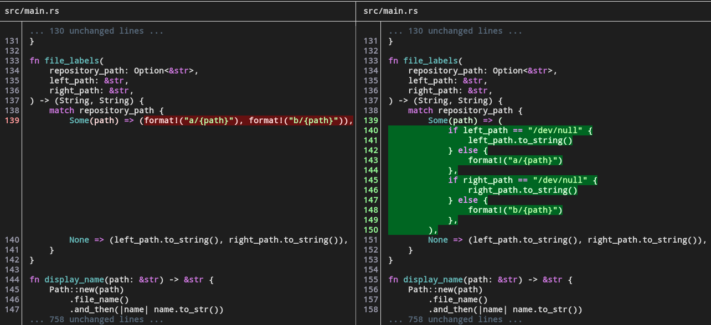
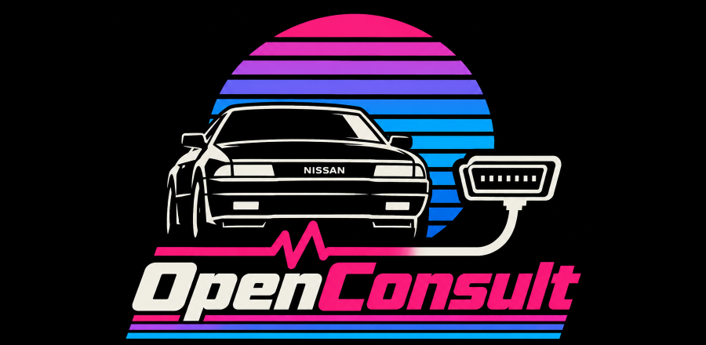
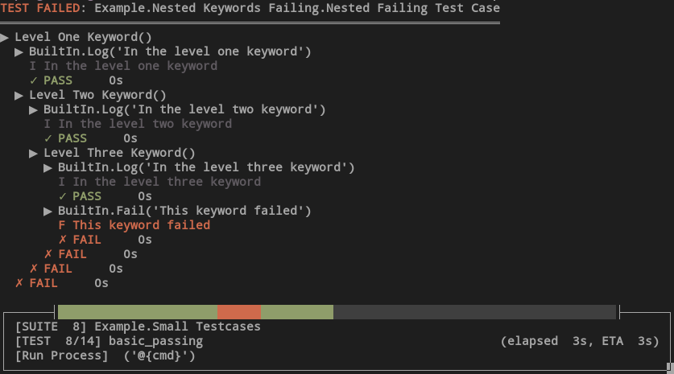
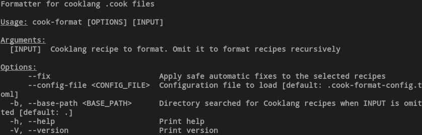
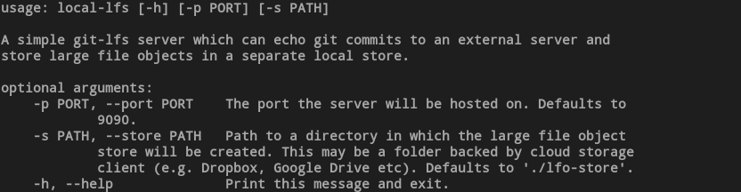
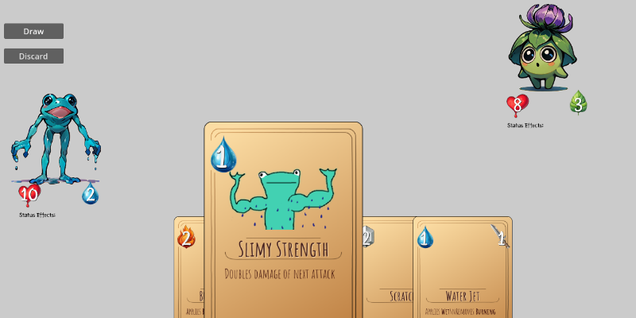
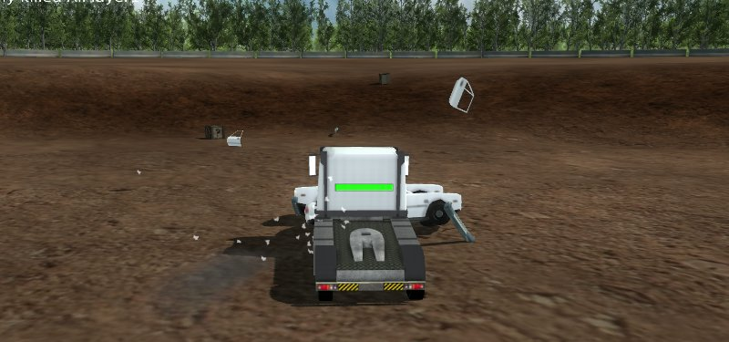
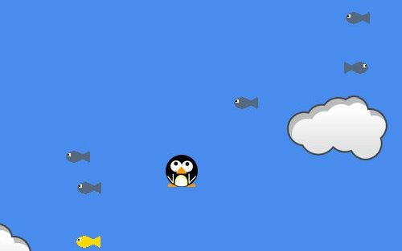

Things I code.
Software
Github
jiff
A terminal diff tool supporting side-by-side output, syntax-highlighting, and sub-line diffs.

OpenConsult
An open-source, cross-platform C++ library and associated tools for reading Nissan's Consult protocol, as used in their cars from the 80s, 90s, and 00s.

robot-trace
A Robotframework front-end that prints progress to the command line during execution.

cook-format
A code formatter for cooklang .cook files.

local-lfs
git-lfs server designed to be self-hosted and store binary files in a compressed form suitable for cloud storage platforms. This offers a more cost-effective route for binary storage than using dedicated git-lfs hosting providers.

Various Games
I've made numerous games over the years, all of them unfinished and in varying states of playability. One day I will actually finish one... I love making games as it brings together many of my skills in a single project, and I find the visual feedback very rewarding. I also really enjoy the process of designing the gameplay and the code that realises it, but I usually run out of time and/or energy before getting it over the line on my own.

Collision Domain
A massively multiplayer demolition derby game created for a games
project in the 3rd year of my degree at the University of Bristol.
The project accounted for a third of the total marks for that year
and was done in a group of six. That it was done in a group and my
degree depended on it are probably the only reasons I actually
finished it!
Written in C++ it makes use of Ogre3D (a graphics library),
Bullet (a physics library), OpenAL (an audio library) and RakNet
(a networking library). Our group achieved the highest mark in the
year for our game. We showed it off at several university open
days afterwards, which made for a fun experience as we were able
to get over 100 prospective Computer Science students and their
parents driving around and causing chaos.

Penguin Jump
A small 1 or 2 player arcade style game written in Java, made with Rupert Bedford. We wrote it from scratch, not making use of any existing libraries, finishing it in just 2 weeks. Despite its simplicity, it's surprisingly addictive and I intend one day revisit the concept to flesh it out a bit further and rewrite it as an Android App.